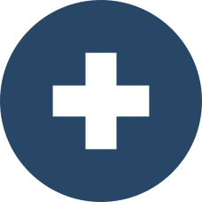

TÓPICO 2
O PROCESSO DE TRABALHO E SAÚDE-DOENÇA DOS TRABALHADORES DA APS
TÓPICO 2
O PROCESSO DE TRABALHO E SAÚDE-DOENÇA DOS TRABALHADORES DA APS
Após compreender a necessidade de envolver vários atores no processo, vamos entender a metodologia de ação a ser adotada para viabilizar a Visat e estabelecer um programa de saúde do trabalhador.
Para isso, adotaremos como referência a metodologia apresentada na Instrução Normativa de Vigilância em Saúde do Trabalhador no SUS (BRASIL, 1998). Tal metodologia divide as ações em sete etapas, reproduzidas de maneira dinâmica, concomitantes e interligadas. Essas etapas podem ser divididas em fase preparatória, análise dos processos, inquéritos, mapeamento de riscos, estudos epidemiológicos, intervenção e acompanhamento do processo.
Clique em cada uma das etapas para conhecê-las.
1
Fase preparatória
2
Análise dos processos
3
Inquéritos
4
Mapeamento de riscos
5
Estudos epidemiológicos
6
Intervenção
7
Acompanhamento do processo
Fase preparatória
Tem como objetivo conhecer, com maior aprofundamento possível, os processos, o ambiente e as condições de trabalho onde será realizada a ação de Visat.
A preparação é realizada por meio de análise conjunta com os trabalhadores daquele local, sendo recomendada também a participação de representantes do sindicato da categoria de trabalhadores.
Essa etapa busca aprofundar o conhecimento sobre o processo de trabalho analisado e, por meio do saber dos trabalhadores articulado a uma equipe técnica, planejar estratégias para o desenvolvimento das ações.
Análise dos processos
Destaca-se a importância da utilização de instrumentos que inventariem o processo produtivo e a sua forma de organização, com o objetivo de analisar a capacidade potencial de adoecer no ambiente de trabalho ou em decorrência das condições em que o trabalho é realizado.
Pode-se criar um roteiro de vigilância no qual os processos e a organização do trabalho são descritos, contextualizados e analisados para a compreensão do processo saúde-doença dos trabalhadores.
Inquéritos
São utilizados para o levantamento de informações que irão subsidiar a investigação e a elaboração da intervenção em Visat. Desenvolvidos, aplicados e analisados por uma equipe interdisciplinar, com participação ativa dos trabalhadores, podendo também considerar a participação dos representantes sindicais.
A aplicação dos questionários no conjunto de trabalhadores possibilita o levantamento da percepção da relação entre trabalho e saúde, da morbidade referida (sinais e sintomas objetivos e subjetivos), da vivência com acidente de trabalho, além de sugestões para a transformação do processo, do ambiente e das condições de trabalho.
Mapeamento de riscos
Podem ser utilizadas diversas técnicas de mapeamento de riscos dos processos de trabalho, de forma gradualmente mais complexa, de modo que a intervenção vá se consolidando e as mudanças vão sendo colocadas em prática, com participação ativa e presente dos trabalhadores na elaboração desse mapeamento.
Estudos epidemiológicos
Podem ser realizados à medida que são identificadas as necessidades de realização dos estudos epidemiológicos, com participação de uma equipe interdisciplinar de técnicos das universidades e dos centros de pesquisa, com assessoramento da equipe e dos trabalhadores que discutem e atuam na Visat.
Intervenção
Pode ser realizada por uma equipe de saúde do trabalhador em conjunto com outras pessoas e deve considerar e observar as normas e as legislações vigentes que regulamentam a relação entre o trabalho e a saúde, especialmente na esfera da saúde, do trabalho, da previdência, do meio ambiente e as internacionais ratificadas pelo Brasil.
Devem-se considerar também situações omissas a essas normas, mas que são potencialmente lesivas ou levam a situações de riscos à saúde. É importante que todas as observações possam ser registradas e guardadas adequadamente para consultas ou acompanhamentos futuros.
Acompanhamento do processo
O processo de intervenção da Visat deve ser acompanhado por meio da elaboração de um relatório detalhando o conjunto de informações coletadas.
O relatório deve ser elaborado pela equipe de saúde do trabalhador com a participação protagonista dos trabalhadores.